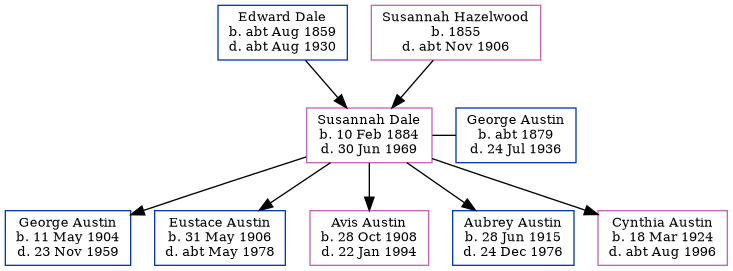

Susannah Elizabeth Austin (née Dale) 1884 - 1969
[ Home ] | [ Calendar ] | [ Surnames Index ] | [ Errors ] | [ Family History ]The child of Edward Dale (a labourer ag) and Susannah Hazelwood, Susannah Dale, the second cousin twice-removed on the father's side of Nigel Horne, was born in Chilham, Kent, England on 10 Feb 18841,2,3, was baptised there on 9 Mar 1884 and married George Austin (a baker's assistant with whom she had 5 children: George Frederick, Eustace Godfrey, Avis Muriel, Aubrey Bryon and Cynthia Roberta) at Church of St Martha On the Hill, Chilworth, Surrey, England on 21 Jun 19034.
During her life, she was living at Prospect Row, Harbledown, Kent, England on 5 Apr 18915; at 2 Heaton Cottages, Heaton Road, Canterbury, Kent on 2 Apr 19116; and at 97 Walnut Tree Close, Guildford, Surrey on 29 Sept 19391, when she was living with her son Eustace Godfrey, following the death of her husband on 24 Jul 1936.
She died on 30 Jun 1969 in Surrey3.
Parents
- Edward William was born c. Aug 1859
- Susannah was born in 1855
Children
- George Frederick was born on 11 May 1904
- Eustace Godfrey was born on 31 May 1906
- Avis Muriel was born on 28 Oct 1908
- Aubrey Bryon was born on 28 Jun 1915
- Cynthia Roberta was born on 18 Mar 1924
Citations
- 1939 Register - Findmypast (was the head of the household)
- England & Wales births 1837-2006 - Findmypast
- England & Wales deaths 1837-2007 - Findmypast
- England & Wales Marriages 1837-2005 - Findmypast
- 1891 England, Wales & Scotland Census - Findmypast (was age 7 and the daughter of the head of the household)
- 1911 Census for England & Wales - Findmypast (was age 27 and the wife of the head of the household)
Media
England & Wales births 1837-2006 - BMD/B/1884/1/AZ/000142/223
England & Wales Marriages 1837-2005 - BMD-M-1903-2-AZ-000093-184
England Births & Baptisms 1538-1975 - R_884109540
Kent, Canterbury Archdeaconry Baptisms - GBPRS-CANT-BAP-024946
1891 England, Wales & Scotland Census - GBC/1891/0005722665
1939 Register - TNA-R39-1900-1900J-011-12
England & Wales Deaths 1837-2007 - BMD-D-1969-3-AZ-000030-095
Family Tree
Map
Generated by ged2site. Last updated on Jul 3, 2024
Known Issues
Removing leading 0 from residence date '02 Apr 1911'
Census information missing between Census UK 1891 and Census UK 1911